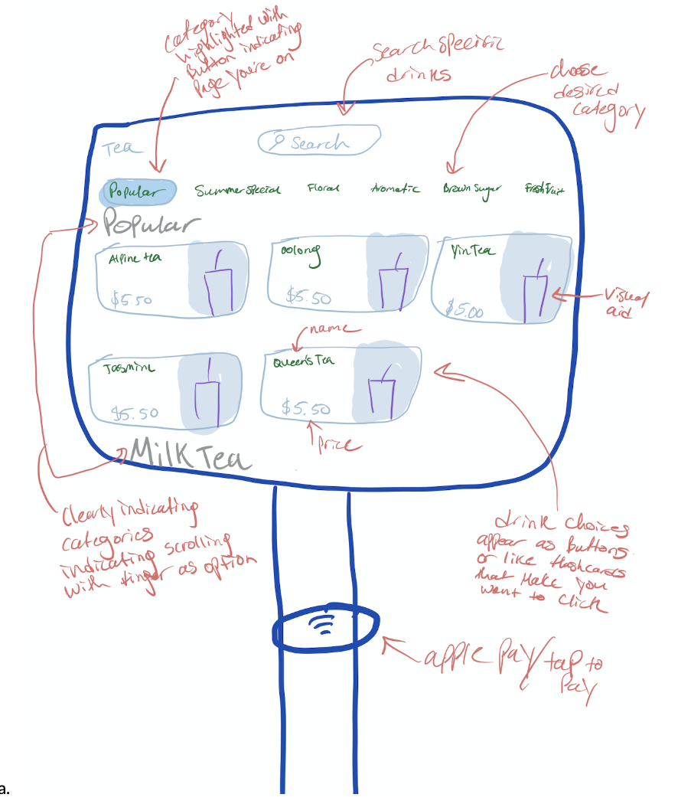

Personas & Storyboarding
Part 1: Preparation
The Ten One Tea House uses a touch-based screen and interface for their customers to place custom orders. As you can see in the sketch, its a screen that organizes the tea choices by category and shows you a visual aid of the tea that is associated with each type of tea. The problem that the interface is trying to solve is the problem of ordering a customized drink from a list of base options. Its key components are its category headers, search box, flash card-esq descriptors of tea, and clearly laid out categories in the main screen that indicate to the user that they can scroll. The function of the search bar is to search for a specific drink instead of scrolling through. The flash card like boxes of the tea’s serve to indicate to the user that they should click on the tea to see more about it and customize it. The categories serve to organize the many teas that they offer. It also has an Apple pay/ tap to pay component below the screen that serves to offer a way for users to pay for their tea.
Questions and Observations
I observed a user struggle to find where the payment option was. After setting up their drink order, one user asked the drink makers if they could pay in cash. The answer was no. One user breezed through the process with speed and casualness. The main difference between some users vs others was the ease at which they went through the ordering process and for one user, their expectations were not met in that they tried to pay with cash but couldn’t.
Questions:
1. Is there anything you would change/add/remove to the kiosk to make this better for you?
Add: description of each boba that was available rather than just a list
Add: cash payment option
2. Was there anything surprising in your experience?
No cash payment option No card swipe option: One user tried swiping their card to pay, only to figure out that there was no swipe option available, so they couldn’t pay for their drink because their credit card was not equipped to handle the “tap and pay” option
3. What was the hardest part of this experience?
Couldn’t find the apple pay reader for a second One user noted that it might be difficult for non-english speakers to navigate the interface as english is the only available language on the screen
4. Could the information be presented in a more meaningful way?
All users thought the information was presented in a meaningful order
User Persona Maps
Jay

Jay is a student who has about 1 hour before his next class. He decides to try out bubble tea so that he can be refreshed and ready for the next class. He is unfamiliar with Ten One Tea House, but is excited to try it out. The problem Jay faces is that he has never used the ordering kiosk before. This persona represents new users to Ten One that might not be familiar with the way you’re supposed to order a drink nor are they familiar with how the kiosk works and the restrictions on payment options.
Jasmine

Jasmine is a regular at Ten One. She is on her way to class and only has 15 minutes to get there. But she is so accustomed to the kiosk ordering system that she knows how to operate it quickly and knows how long it will take. She heads into the store to get her usual before running off to class. The interface problem that Jasmine faces is that she needs consistency in the way it works, she needs to know that her favorite drink is on the second page so that she can quickly order it and pay before her class in 15 minutes. This persona represents users that are accustomed to the ordering system of Ten One and have confidence in the stores ability to quickly produce drinks that come through the ordering system.
Storyboard
Jay

Jasmine